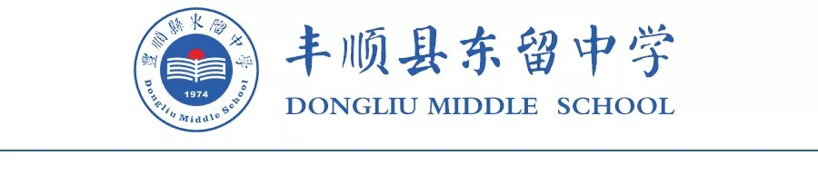

以人为本，求真务实。突出学校的特色，彰显学校的品位。实行科学化、人性化管理，致力打造一支充满爱心，胸怀理想、富有激情，勤教乐学，求实创新的教师队伍。培养一批品行端正，积极进取，热爱生活、勤奋学习，自信自强，敢于挑战自我，善于与人合作的学生
我校创办于1974年。1998年7月，由乡贤、著名实业家朱孟依先生捐资1200万元全面兴建。全国政协原副主席叶选平同志题写校名。学校占地面积2.5万平方米，现有教学楼4栋，师生宿舍楼各1栋，语音室、图书室、阅览室各1间，多媒体电化教室3间，科技实验楼1栋，运动场地有200m跑道和2个篮球场、2个排球场和室内体育室（397m2），有地理园和生物园。服务区范围覆盖大坪、仙丰、志扬、志南、新美、长林、新埔、口埔、小东、石九共10个行政村。依山傍水，校园内落英缤纷、芳草鲜美、风景秀丽、环境幽雅。学校是广东省美丽校园，梅州市一级学校，2007年—2013年连续6年荣获丰顺县初中教学质量奖，连续11届荣获丰顺县中小学田径运动会甲组团体总分前六名（2007年荣获甲组团体冠军）。 学校现有教学班级14个，学生675人，教职员工65人，其中高级教师11人，一级教师34人，其中省级优秀教师5人，市级优秀教师10人，县级优秀教师18人。教学设施较为齐全，各科按照课标规定的实验均能全部分组进行，多媒体教室、宽带网、有线电视网能满足现代化教学的需要，图书馆藏书2.4万余册。近几年来，我校中考升学率逐年提高，入重点中学人数大幅度增加，全县学年统考成绩居同类学校前列，教师和学生参加全国、省、市、县各类竞赛，获奖者逾百人。2011年中考入重点围108人，2012年中考入重点围96人，2013年中考入重点围81人，获得社会各界的普通赞誉。 学校校风好、教风严、学风浓。多年来中考成绩一直保持在全县中上水平。教师教育教学论文获县级以上奖励100余篇。学校先后荣获“广东省美丽校园”、“梅州市一级学校”、“梅州市美丽校园”、“梅州市文明单位”、“梅州市法制教育先进单位”、“梅州市行为规范教育示范学校”、“丰顺县文明单位”、“丰顺县美丽校园”、“丰顺县法制宣传教育先进单位”、“丰顺县优秀安全文明小区”、“丰顺县群众体育先进学校”、“丰顺县先进基层党组织”等荣誉称号。 学校坚持“以人为本，求真务实”的办学理念，坚持“质量强效、人才强校、特色强校、创新强校”的办学模式，与时俱进、开拓创新、突出学校的特色，彰显学校的品位。实行科学化、人性化管理。致力打造一支充满爱心，胸怀理想、富有激情、勤教乐学、求实创新、特别能吃苦、特别能耕耘、特别能奉献的教师队伍。培养一批品行端正，积极进取、热爱生活、勤奋学习、自信自强、敢于挑战自我、善于与他人合作、勇于追求理想的学生。坚持正确的办学方向，强化办学能力，全面推进素质教育，力争办出校园人文浓郁、科学管理有序、师资队伍素质好、教育教学质量高、有品位、有特色的现代化农村初级中学。